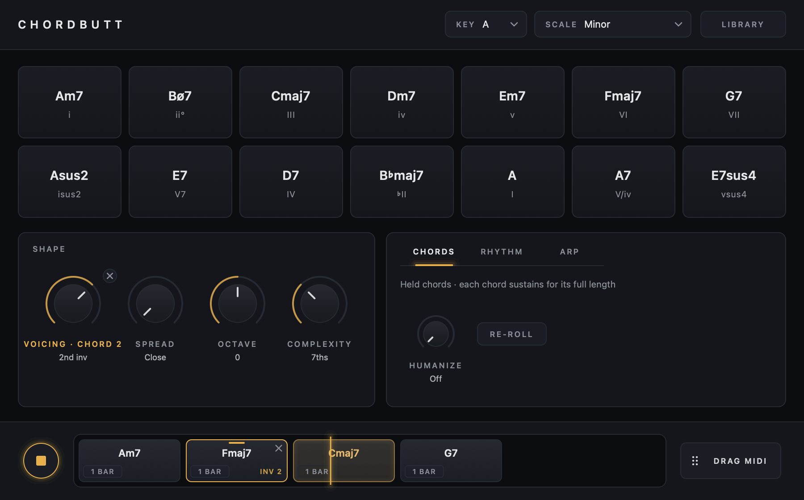
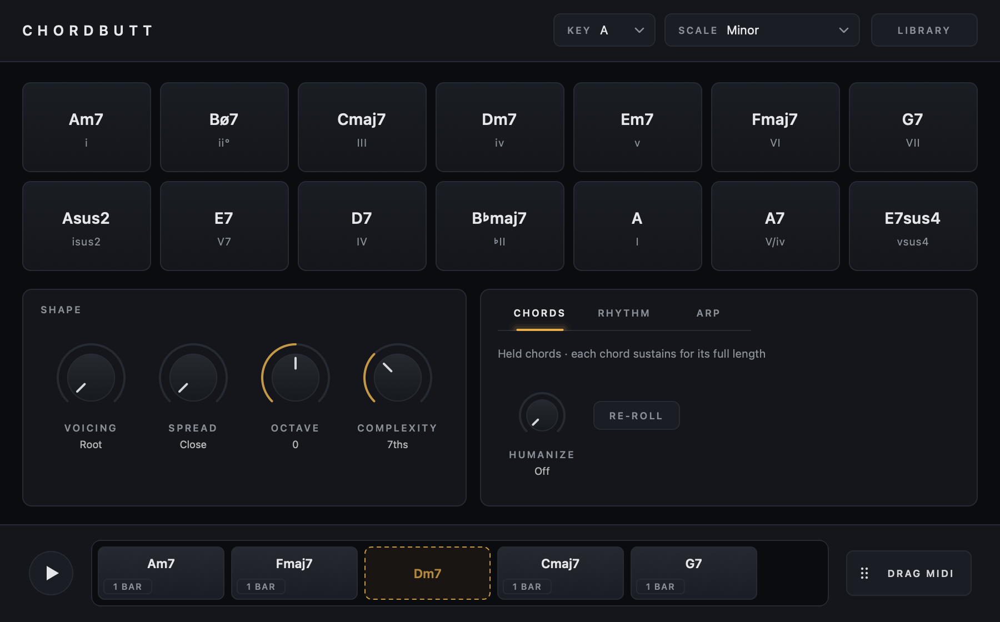
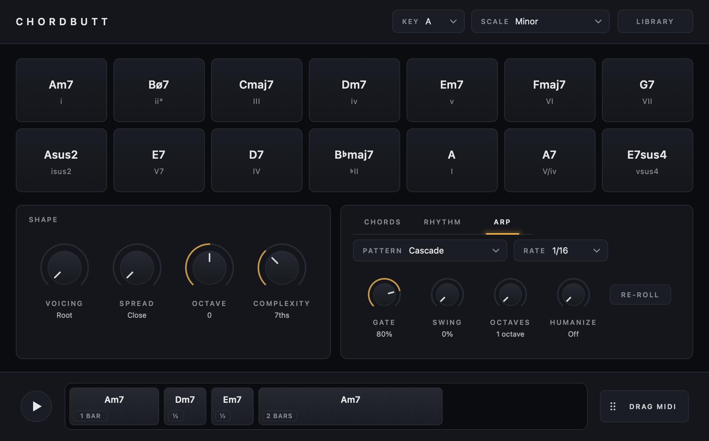
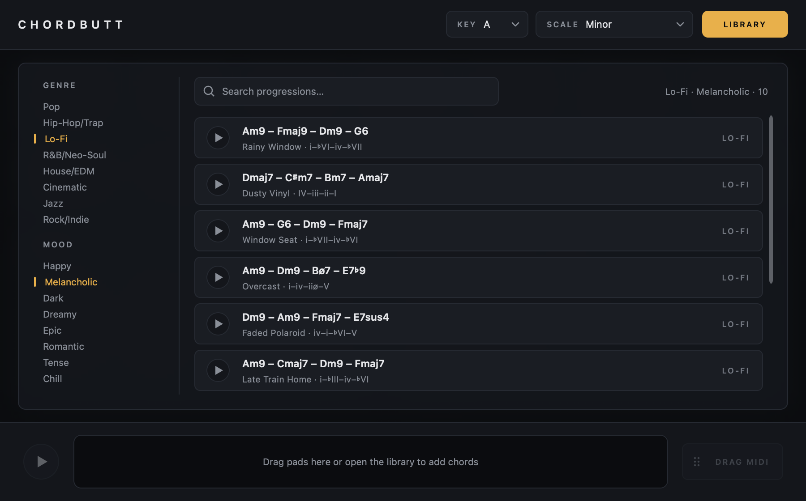

Find the chords. Drag them into Logic.
ChordButt is a MIDI FX plugin for Logic Pro. Pick a key, audition chords through your own instrument, build a progression, and drag it into your track as a MIDI region.
Free. Version 1.0, 4.9 MB. Audio Unit for Logic Pro on macOS 11 or later, Apple Silicon and Intel.

Hear a few from the library
Six of the 200 progressions, voiced the way ChordButt voices them with Spread on Open. Your browser plays them with a simple synth; in Logic you hear your own instrument.
How it works
-
Pick a key and listen
Choose a root and a scale. The top row shows the chords of the key, the bottom row adds sus, borrowed and secondary-dominant colour. Click a pad to hear it through the instrument on your track.
-
Drag chords into the strip
Drag a pad down to the strip. A placeholder opens where the chord will land and the others slide aside. Each chord can be half a bar, one bar or two bars long; drag slots sideways to reorder.

-
Choose how it plays
Hold the chords, play them in a rhythm, or arpeggiate them. Gate, swing, octave range and humanize shape the feel. Press play to loop the progression at your project tempo.

-
Drag the MIDI into Logic
Pull the progression out with Drag MIDI, or drag a single chord straight out of the strip. You get a normal MIDI region, exactly as long as your progression, with exactly what you heard.
From a tight cluster to a wide piano spread
Spread moves the root down into the bass and opens the chord above it, in five steps. Here is Cmaj7 at every step, from middle C down.
Arpeggios that don't just run up and down
- Cascade
- Falling waves of three notes, each starting a step lower.
- Pendulum
- Swings outward from the middle of the chord and back.
- Broken Thirds
- Skips up through the chord and mirrors back down.
- Octave Leap
- Every note answered an octave higher.
- Gallop
- Long, short, short, rolling up through the notes.
- Syncopated 16ths
- A 3-3-3-3-2-2 pattern with accents, bass against the top.
- Strum
- Chords rolled like a guitar, down on one and up on three.
Rhythm mode adds Stabs, Offbeat, Pulse 8ths, Charleston and Push. Every pattern follows your project tempo.
200 progressions, sorted by genre and mood
Pick a genre, a mood, or both, and search by name or chord. Preview any progression before you load it; loading drops it into the strip in your key, ready to edit.
Genres
Moods

Get ChordButt
Free
Download ChordButt 1.0- Audio Unit MIDI FX for Logic Pro
- macOS 11 or later
- Apple Silicon and Intel
- ZIP, 4.9 MB
Install
- Quit Logic Pro and unzip the download.
- Copy
ChordButt.componentto~/Library/Audio/Plug-Ins/Components. In Finder, use Go › Go to Folder and paste the path. - This build isn't notarized by Apple yet, so macOS blocks it until you clear the download flag. In Terminal, run:
xattr -dr com.apple.quarantine ~/Library/Audio/Plug-Ins/Components/ChordButt.component - Open Logic Pro. On a Software Instrument track, click an empty MIDI FX slot and choose Audio Units › MyPlugins › ChordButt.
Not in the list? Open Logic Pro › Settings › Plug-in Manager, select ChordButt and click Reset & Rescan Selection. No sound while Logic is stopped? Select the track: Logic only runs MIDI FX on the selected or record-enabled track.